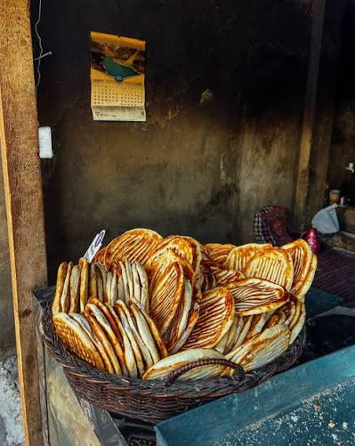
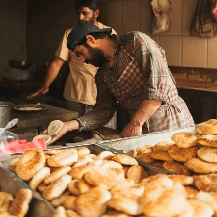
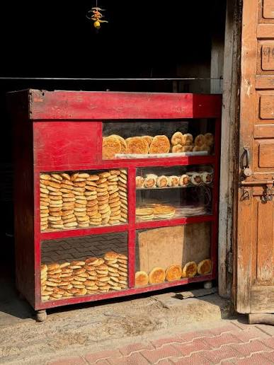

JAMMU: Before the first rays of sunlight reach the streets of Jagti Township, the warmth of a traditional clay oven begins to fill the air inside a modest neighbourhood bakery. A baker carefully shapes dough with practiced hands before placing it inside the glowing tandoor. Within minutes, the aroma of freshly baked girda and lavasa spreads through the locality, drawing customers who have followed this morning ritual for years.
Scenes like these continue to unfold every day across Jagti, TRT Camp Nagrota, Muthi, Durga Nagar, Talab Tillo and Udheywala, where traditional kandurs remain an essential part of life for many Kashmiri migrant families settled in Jammu. Although supermarkets, cafés and modern bakeries now offer a wide variety of breads and baked products, these small neighbourhood bakeries continue to hold a special place in the community because they offer something beyond food — they preserve tradition, identity and memories.
For many migrant families, buying bread from a kandur is not simply a daily purchase but a continuation of customs that have been followed for generations. Freshly baked girda, lavasa, kulcha and baqerkhani remain an important part of breakfast and evening tea, connecting families in Jammu with the culinary traditions they once enjoyed in Kashmir.


The role of the kandur extends beyond baking. Traditionally, these bakeries have served as informal community spaces where neighbours exchange greetings, discuss local issues and begin their day. Even today, customers often arrive early in the morning not only to purchase bread but also to spend a few moments in familiar surroundings that remind them of home.
However, maintaining this tradition has become increasingly challenging. The growth of modern bakeries, changing eating habits, rising operational expenses and increasing competition have affected many small businesses. Younger consumers now have access to packaged bread, cakes, pastries and international bakery products, while online food delivery services have changed the way many families purchase food.
Despite these changes, traditional kandurs continue to attract loyal customers because of the distinctive taste and texture of bread prepared in clay ovens. Unlike commercially produced bread, traditional Kashmiri breads are handmade using time-tested methods that require experience, patience and precision. Every stage — from kneading the dough to shaping each loaf and carefully baking it inside the tandoor — reflects a craft that has been passed down through generations.
Many bakery owners say that maintaining consistent quality has become more difficult due to rising prices of flour, cooking fuel and other raw materials. Operating costs have increased significantly over the years, while customer expectations remain high. Balancing affordability with quality has therefore become one of the biggest challenges faced by these traditional businesses.
A veteran kandur owner, reflecting a common experience among traditional bakers, says: "People still come to us because they trust the taste of bread baked in a clay oven. Modern bakeries have more products, but our customers return for the freshness and the tradition they grew up with."
Customers, however, continue to value authenticity. For many elderly members of the migrant community, bread from a kandur is inseparable from their memories of Kashmir. They believe that the traditional baking process produces flavours that cannot be replicated by modern ovens or factory-produced bread.
A regular customer from the migrant community says: "Buying bread from the kandur is part of our morning routine. We have been doing it for years. The aroma, the texture and the taste remind us of home in Kashmir."

The younger generation presents both a challenge and an opportunity. While many young people prefer convenience foods or commercially available bakery products, others are rediscovering traditional foods as part of a growing interest in cultural heritage. During festivals, family gatherings and community events, traditional breads continue to enjoy strong demand, demonstrating that these culinary traditions remain deeply rooted in the lives of many families.
A young resident adds: "Even though supermarkets sell packaged bread, we still prefer girda and lavasa from the local kandur whenever the family gathers. It keeps our traditions alive."
The continued existence of kandurs also contributes to the local economy. These bakeries generate employment for skilled workers and support small-scale food businesses across Jammu. In addition to serving local residents, they attract visitors interested in experiencing authentic Kashmiri cuisine beyond restaurants and tourist destinations.
Food heritage experts often emphasise that traditional cuisines are an important part of cultural identity. Preserving culinary traditions involves more than protecting recipes — it also means supporting the people whose skills keep these traditions alive. Traditional bakers represent an important part of this living heritage, and their knowledge deserves recognition and encouragement.
As Jammu continues to expand and modern lifestyles evolve, the future of traditional kandurs will depend on their ability to adapt while maintaining authenticity. Some bakery owners have begun accepting digital payments and promoting their products through social media or messaging applications, demonstrating that tradition and technology can coexist.
Supporting these small neighbourhood bakeries is not only about preserving a business model but also about protecting a unique cultural practice that continues to unite communities through food. Every loaf baked inside a clay oven carries with it stories of migration, resilience and identity — stories that remain relevant for thousands of families living far from the Valley they once called home.
While modern bakeries will undoubtedly continue to grow, the enduring popularity of traditional kandurs suggests that heritage still has a place in contemporary society. For many families across Jammu, the aroma of freshly baked bread emerging from a traditional clay oven remains a comforting reminder that some traditions continue to thrive despite the passage of time.